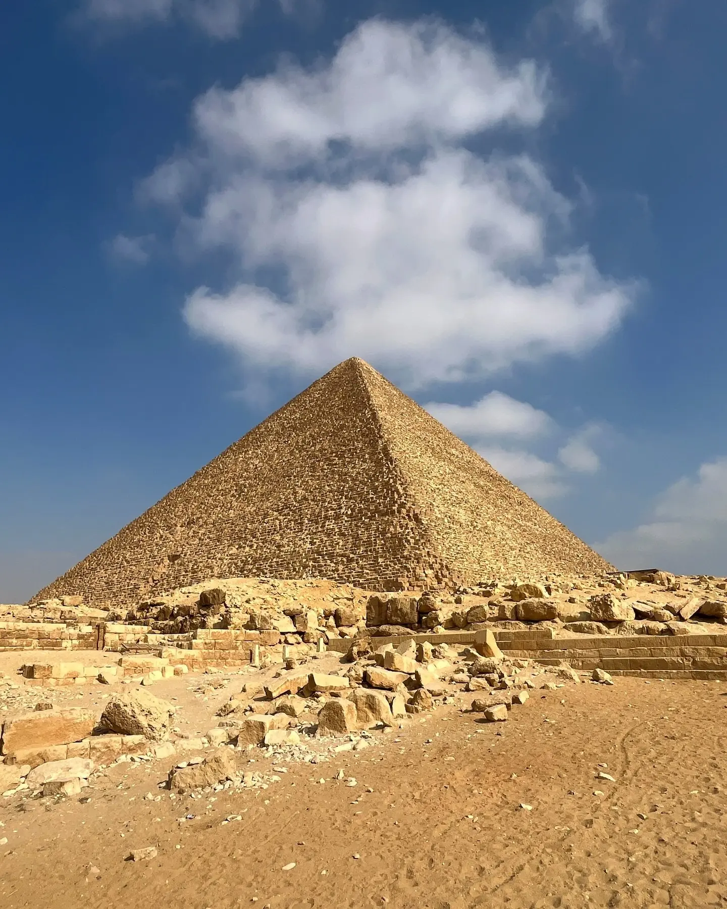
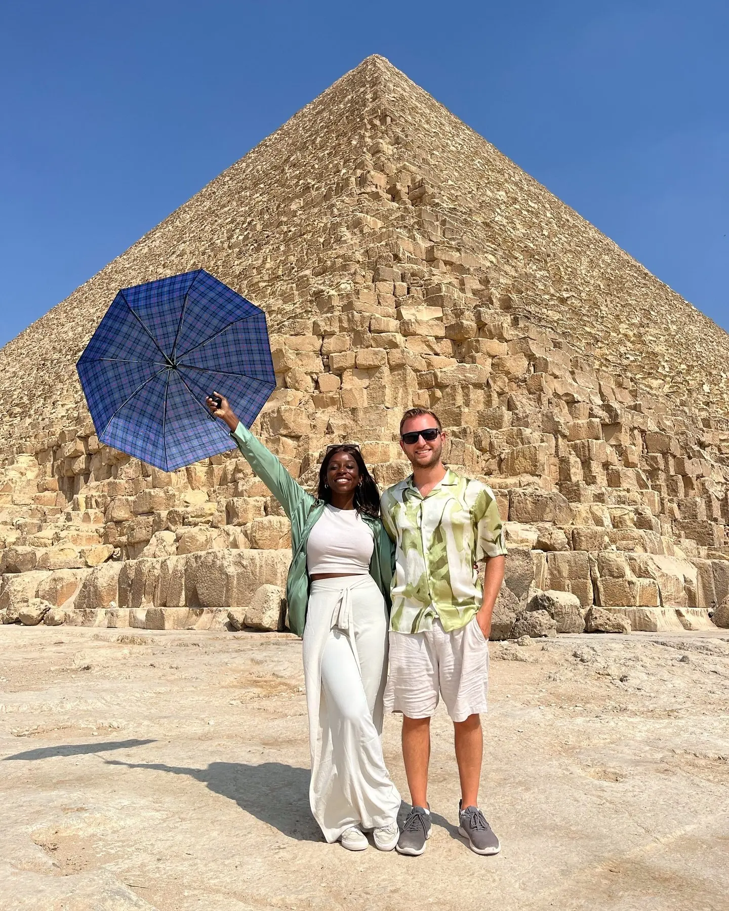

Spot 01 · The bucket-lister01
The Great Pyramid of Giza
📍 Pyramid of Khufu · Giza Plateau
The last of the Seven Wonders still standing, and somehow bigger in person than any photo prepared us for. We went right at opening (8am) to beat the heat and the crowds, bought the general plateau ticket, and still couldn't get over the block-by-block scale: each stone is taller than most people.
Open 8amBring water & shade